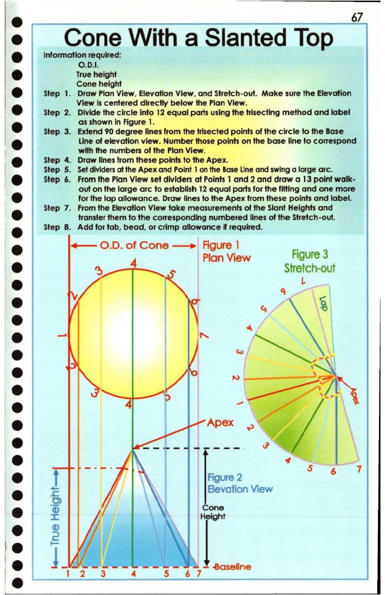

67. Cone with a Slanted Top

67
@ iJ
e Cone With a Slanted Top
© Information required:
O.D.I.
@ True height
Cone height
@ Step 1. Draw Plan View, Elevation View, and Stretch-out. Make sure the Elevation
View is centered directly below the Plan View.
@ Step 2. Divide the circle into 12 equal pars using the trisecting method and label
S as shown in Figure a
Step 3. Extend 90 degree lines from the trisected points of the circle to the Base
@ Line of elevation view. Number those points on the base line to correspond
| with the numbers of the Plan View. "|
e@ Step 4. Draw lines from these points to the Apex. ’
Step 5. Set dividers at the Apex and Point 1 on the Base Line and swing a large arc.
@ Step 6. From the Plan View set dividers at Points 1 and 2 and draw a 13 point walk-
out on the large arc to establish 12 equal parts for the fitting and one more
@ for the lap allowance. Draw lines fo the Apex from these points and label.
| Step 7. From the Elevation View take measurements of the Slant Heights and
I @ transfer them to the corresponding numbered lines of the Stretch-out.
| e Step 8. Add for tab, bead, or crimp allowance if required.
O.D. of Cone —>| Figure |
° Plan View Figure 3
8 4 Stretch-out
@ .
9a \ i
O peng te
@ % a me OY |
|° \ | ie OK
) Apex ., ql |
e Piccias: a \
ie) 4 i
4 5 & 5
8 Figure 2
e = Blevation View
@ [ay Cone
© Apes
3 /
| AA
- ——— ee = Baseline
pd 1273 4 5 67